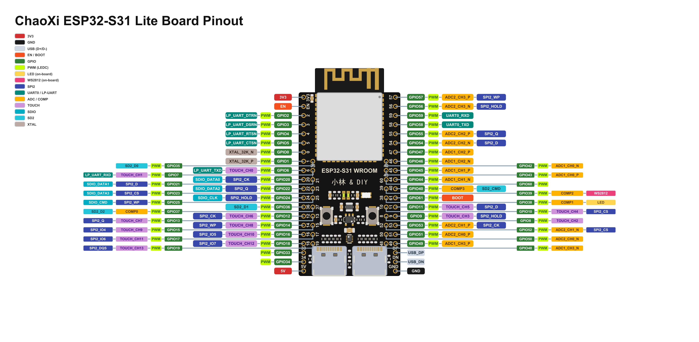

CX0001 ESP32-S31 开发教程
ESP-IDF v6.1.1 · 目标芯片 esp32s31（idf.py --preview）

学习顺序
| 章节 | 教程 | 示例工程 |
|---|---|---|
| 00 · 开发环境 | 阅读 HTML | — |
| 01 · GPIO LED | 阅读 HTML | 01_GPIO_LED |
| 02 · GPIO 按键 | 阅读 HTML | 02_GPIO_BUTTON |
| 03 · WS2812 | 阅读 HTML | 03_WS2812 |
| 04 · USB 串口 | 阅读 HTML | 04_USB_SERIAL |
| 05 · USB 虚拟U盘 | 阅读 HTML | 05_USB_MSC |
| 06 · BLE 透传 | 阅读 HTML | 06_BLE_UART |
| 07 · BLE 控灯 | 阅读 HTML | 07_BLE_LED |
| 08 · Wi-Fi Socket | 阅读 HTML | 08_WIFI_SOCKET |
| 09 · 网页控灯 | 阅读 HTML | 09_WEB_WS2812 |
板级引脚
| 项目 | 值 |
|---|---|
| 板载 LED | GPIO38（高有效） |
| BOOT 键 | GPIO61（低有效） |
| WS2812 | GPIO39（GRB） |
| 烧录/调试 | USB-Serial-JTAG |
| Flash / PSRAM | 16MB / 16MB |
Markdown 源文件与 HTML 并存；修改 .md 后运行 python build_html.py 重新生成。
从零开始：00 · 开发环境